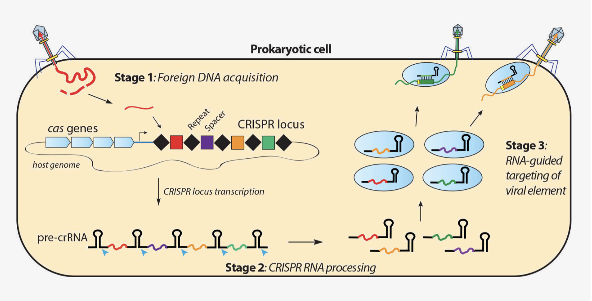

The goal of my research is to use the process of directed evolution in order to engineer novel CRISPR-Cas protein variants for the purposes of genome editng. Within the Li lab at the institute of Molecular Biophysics, we are focused on creating CRISPR protein variants which are highly efficient and specific at cleaving dsDNA (double-stranded DNA). I utilize a bacterial selection assay to identify these novel CRISPR variant (see publications below). After identification of novel variants, I utilize them in both HCT116 cells (human colorectal carcinoma) and hESC (human embryonic stem cell) lines to characterize their function in vivo.
CRISPR is an adaptive and heritable immune system that both archaea and bacteria organisms contain.
Bacteriophage are viruses which infect bacteria by releasing viral DNA into the host. The bacteriophage utilize the host's cellular machinery (ribosomes) in order to replicate and form its viral progeny. However, over many millions of years, bacteria have developed a unique biological immune system to capture and store this viral DNA within its own genome. Therefore, when a future infection takes place, the bacteria already contains a copy of the virus DNA and can create specialized endonuclease proteins to seek and destroy bacteriophage DNA. Scientists have discovered that the proteins created through this CRISPR immune system could be harnessed and programmed to target and cut dsDNA in other organisms (humans, plant and fungi). Today, there are now many different CRISPR proteins which are used for genetic and epigenetic genome modifications.
| Publication on Cas6 | Publication on AceCas9 | Publication on AceCas9 and SpyCas9 proteins |
| Cas6 processes tight and relaxed repeat RNA via multiple mechanisms:A hypothesis | Phosphate Lock Residues of Acidothermus cellulolyticus Cas9 Are Critical to Its Substrate Specificity | Preprint: Catalytically Enhanced Cas9 through Directed Protein Evolution |